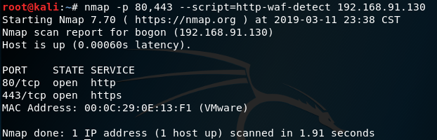

2019年，占个位置慢慢写
未完待续。。。
一 配置
1.1 kali主机IP：192.168.91.128
1.2 漏洞服务器IP：192.168.91.130

ping一下：
浏览器访问：
大功告成
二. 侦察
在每个渗透测试中，无论对于网络还是Web应用，都有一套流程。其中需要完成一些步骤，来增加我们发现和利用每个影响我们目标的可能的漏洞的机会。例如：
- 侦察
- 枚举
- 利用
- 维持访问
- 清理踪迹
侦查是一个层面，其中测试者必须识别网络、防火墙和入侵检测系统中所有可能组件。它们也会收集关于公司、网络和雇员的最大信息。在我们的例子中，对于Web应用渗透测试，这个阶段主要关于了解应用、数据库、用户、服务器以及应用和我们之间的关系。
侦查是每个渗透测试中的必要阶段。我们得到了的目标信息越多，发现和利用漏洞时，我们拥有的选项就越多。
2.1 Nmap使用
Nmap 可能是世界上最广泛使用的端口扫描器。他可以用于识别活动主机、扫描 TCP和UDP 开放端口，检测防火墙，获得运行在远程主机上的服务版本，甚至是，可以使用脚本来发现和利用漏洞。
2.1.1 操作步骤
- 查看服务器是否响应
nmap -sn 192.168.91.130
- 查看打开的端口
nmap 192.168.91.130
- 让 Nmap 向服务器询问正在运行的服务的版本，并且基于它猜测操作系统
map -sV -O 192.168.91.130

可以看到漏洞服务器使用Apache2.2.14的Web服务器；PHP使用的版本是5.3.2；使用的是Linux2.6的内核。
2.1.2 工作原理
Nmap 是个端口扫描器，这意味着它可以向一些指定IP的TCP或UDP端口发送封包，并检查是否有响应。如果有的话，这意味着端口是打开的，因此，端口上运行着服务。
在第一个名中，使用-sn参数，我们让Nmap只检查是否服务器响应ICMP请求（或ping）。我们的服务器响应了，所以它是活动的。
第二个命令是调用 Nmap的最简方式，它只指定目标IP。所做的事情是先ping服务器，如果它响应了，Nmap 会向1000个TCP端口列表发送探针，来观察哪个端口响应，之后报告响应端口的结果。
第三个命令向第二个添加了如下两个任务：
- -sV 请求每个被发现的开放端口的标识（头部或者自我识别），这是它用作版本的东西。
- -O 告诉 Nmap，尝试猜测运行在目标上的操作系统。使用开放端口和版本收集的信息。
2.1.3 其他参数
-sT：通常，在 root用户下运行Nmap时，它使用SYN扫描类型。使用这个参数，我们就强制让扫描器执行完全连接的扫描。它更慢，并且会在服务器的日志中留下记录，但是它不太可能被入侵检测系统检测到。-Pn：如果我们已经知道了主机是活动的或者不响应ping，我们可以使用这个参数告诉Nmap 跳过 ping 测试，并扫描所有指定目标，假设它们是开启的。-v：这会开启详细模式。Nmap会展示更多关于它所做事情和得到回复的信息。参数可以在相同命令中重复多次：次数越多，就越详细（也就是说，-vv或-v -v -v -v）。-p N1,N2...Nn：如果我们打算测试特定端口或一些非标准端口，我们可能想这个参数。N1到Nn是打算让 Nmap 扫描的端口。例如，要扫描端口21，80到90，和137，参数应为：-p 21,80-90,137。--script=script_name：Nmap包含很多实用的漏洞检测、扫描和识别、登录测试、命令执行、用户枚举以及其它脚本。使用这个参数来告诉Nmap在目标的开放端口上运行脚本。你可能打算查看一些 Nmap 脚本，它们在：https://nmap.org/nsedoc/scripts/。
2.2 识别 Web 应用防火墙
Web 应用防火墙（WAF）是一个设备或软件，它可以检查发送到Web服务器的封包，以便识别和阻止可能的恶意封包，它们通常基于签名或正则表达式。
如果未检测到的 WAF 阻止了我们的请求或者封禁了我们的IP，我们渗透测试中就要处理很多的麻烦。在执行渗透测试的时候，侦查层面必须包含检测和是否被WAF，入侵检测系统（IDS），或者入侵阻止系统（IPS）。这是必须的，为了采取必要的手段来防止被阻拦或禁止。
2.2.1 操作步骤
Nmap 包含了一些脚本，用于测试 WAF 的存在。在漏洞服务器上尝试它们：
nmap -p 80,443 –script=http-waf-detect 192.168.56.102

没检测到任何 WAF，漏洞服务器上没有任何WAF。在真正拥有防火墙的服务器上尝试相同命令，使用
www.baidu.com.nmap -p 80,443 –script=http-waf-detect www.baidu.com
可以看到，80和443端口都配备有WAF。另一个 Nmap 脚本，可以帮助我们识别所使用的设备，并更加精确。
nmap -p 80,443 –script=http-waf-fingerprint www.baidu.com
另一个 Kali Linux 自带的工具可以帮助我们检测和是被 WAF，它叫做
waf00f。waf00f www.baidu.com
2.2.2 工作原理
WAF 检测的原理是通过发送特定请求到服务器，之后分析响应。例如，在http-waf-detect的例子中，它发送了一些基本的恶意封包，并对比响应，同时查找封包被阻拦、拒绝或检测到的标识。http-waf-fingerprint也一样，但是这个脚本也尝试拦截响应，并根据已知的不同 IDS 和 WAF 的模式对其分类。wafw00f也是这样。
2.3 获取和修改 Cookie
Cookie 是由服务器发送给浏览器（客户端）的小型信息片段，用于在本地储存一些信息，它们和特定用户相关。在现代Web应用中，Cookie用于储存用户特定的数据、例如主题颜色配置、对象排列偏好、上一个活动、以及（对我们更重要）会话标识符。
2.3.1 实验操作
启动 Mantra ，在终端输入即可启动
owasp-mantra-ff
从 Mantra 的菜单栏访问Tools | Application Auditing | Cookies Manager +
浏览http://192.168.91.130/WackoPicko/
在这个截图中，我们可以从这个插件中看到所有该时刻储存的Cookie，以及所有它们所属的站点。我们也可以修改它们的值，删除它们以及添加新的条目。
2.3.2 工作原理
Cookies Manager+ 是个浏览器插件，允许我们查看、修改或删除现有的Cookie，以及添加新的条目。因为一些应用依赖于储存在这些Cookie中的值，攻击者可以使用它们来输入恶意的模式，可能会修改页面行为，或者提供伪造信息用于获取高阶权限。
同时，在现代 Web 应用中，会话Cookie通常被使用，通常是登录完成之后的用户标识符的唯一兰苑。这会导致潜在的有效用户冒充，通过将Cookie值替换为某个活动会话的用户。
2.4 使用 DirBuster 发现文件和文件夹
DirBuster 是个工具，用于通过爆破来发现Web服务器中的现存文件和目录。
DirBuster在 kali 下自带字典的路径为
/usr/share/dirbuster/wordlists/
2.4.1 实验操作
如上图，
线程一般设置20；字典文件选择自带的即可；递归选项有时可以去点。
2.4.2 工作原理
DirBuster 是个爬虫和爆破器的组合，它允许页面上的所有连接，同时尝试可能文件的不同名称。这些名称可以保存在文件中，类似于我们所使用的那个，或者可以由DirBuster 通过“纯粹暴力破解”选项，并为生成单词设置字符集和最小最大长度来自动生成。
为了判断文件是否存在，DirBuster使用服务器生成的响应代码。最常见的响应在下面列出：
200 OK：文件存在并能够读取。301 Moved permanently：这是到给定 URL 的重定向。401 Unauthorized：需要权限来访问这个文件。403 Forbidden：请求有效但是服务器拒绝响应。404 File not found：文件不存在。
2.5 使用 Cewl 分析密码
cewl 通过爬行网站获取关键信息创建一个密码字典
使用 CeWL 来获取应用所使用的单词列表。并保存它用于之后的登录页面暴力破解。
2.5.1 操作步骤
首先查看一下 cewl 的帮助文档，了解相关的选项
使用 cewl 来获得漏洞服务器中
WackoPicko应用中的单词。长度最小为5 的单词，显示单词数量，将结果保存到cewl_WackoPicko.txt
cewl -w cewl_WackoPicko.txt -c -m 5 http://192.168.91.130/WackoPicko/
查看结果
这个列表仍然需要一些过滤来去掉数量多但是不可能用于密码的单词，例如“Services”，“Content”或者“information”。
2.5.2 工作原理
CeWL 是个 Kali 中的工具，爬取网站并提取独立单词的列表。它也可以提供每个单词的重复次数，保存结果到文件，使用页面的元数据以及其它。
2.5.3 其他相关工具
其它工具也可用于类似目的，它们中的一些生成基于规则或其它单词列表的单词列表，另一些可以爬取网站来寻找最常用的单词。
- Crunch：这是基于由用户提供的字符集合的生成器。它使用这个集合来生成所有可能的组合。Crunch 包含在 Kali 中。
- Wordlist Maker (WLM)：WLM 能够基于字符集来生成单词列表，也能够从文本文件和网页中提取单词（http://www.pentestplus.co.uk/wlm.htm）。
- Common User Password Profiler (CUPP)：这个工具可以使用单词列表来为常见的用户名分析可能的密码，以及从数据库下载单词列表和默认密码（https://github.com/Mebus/cupp）。


评论加载中